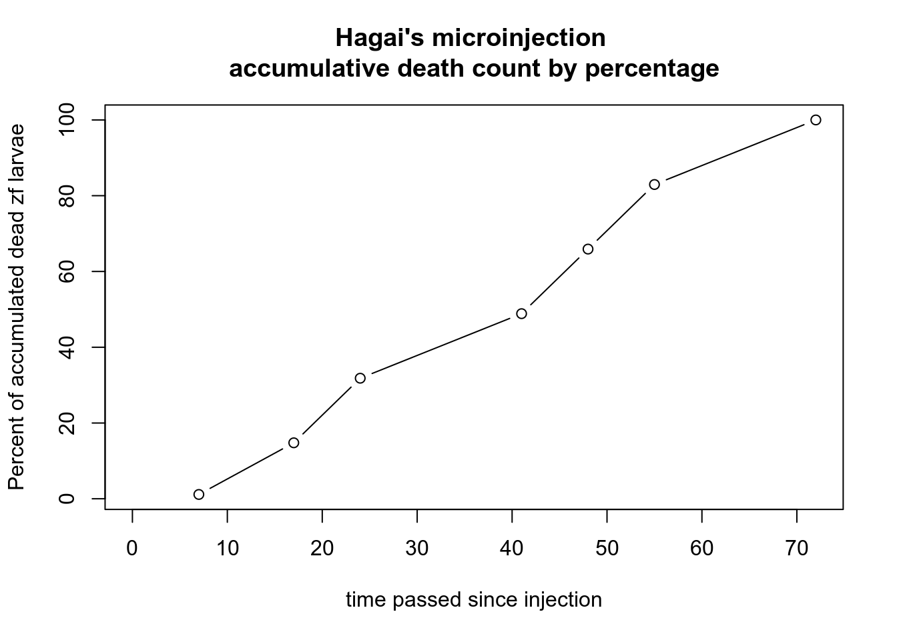

A Minimal Book Example
2020-10-31
Chapter 1 Prerequisites
This is a sample book written in Markdown. You can use anything that Pandoc’s Markdown supports, e.g., a math equation \(a^2 + b^2 = c^2\).
The bookdown package can be installed from CRAN or Github:
install.packages("bookdown")
# or the development version
# devtools::install_github("rstudio/bookdown")Remember each Rmd file contains one and only one chapter, and a chapter is defined by the first-level heading #.
To compile this example to PDF, you need XeLaTeX. You are recommended to install TinyTeX (which includes XeLaTeX): https://yihui.org/tinytex/.
Taken from V1.0 - Protocols: CRISPR/Cas9 (with HD) zebrafish zygote microinjection protocol
1.1 13Nov2019 CRISPR/Cas9 (with HD) zebrafish zygote microinjection protocol:
ssODN dilution:
Stock ssODN (M743T HD) is concentrated to 5932 ng/µg, dilution is required for injection mix preperation.
Mix material by ’s instructions on . Afterwards carry out vortex and spindown.
Table 1 - ssODN dilution:
Cas9 protein dilution: Stock Cas9 (protein) is concentrated to 5000 ng/µg, dilution is required for injection mix preperation.
Mix material by ’s instructions on . Afterwards carry out vortex and spindown.
Table 2:
| Material | Initial Concentration | Volume to pick | DDW | final concontration | Final Volume |
|---|---|---|---|---|---|
| Cas9 | 5000 ng/µL | 1 µL | 4 µL | 1000 ng/µg | 12 µL |
Cas9/gRNA complex formation
Mix:
- DDW from microinjection mix.
- Cas9 from microinjection mix.
- gRNA from microinjection mix.
Place in incubation at 37°C for ~10 miutes.
Injection mix:
On , mix the following materials. Perform vortex and spindown.
Table 3:Scr7 Dilution:
In a 50 ml falcon tube:
Table 4:
DMSO Dilution:
In a 50 ml falcon tube:
Table 5:
Injection:
- After zf mate - TL type, injection volume ~2 nL of injection mix (table 3), inject embryos at 1-cell stage on agarose gel track plate (pre heated to 28.5°C).
- Keep a few embryos uninjected for negative control.
- After injection move to Scr7 medium.
1.2 Microinjections on November 13th:
Date: November 13th, 2019 Following protocol
We got our which I now call .
1.2.1 Batch table:
Batch 1 compiles of 40 zygotes, 27 of which were microinjected by Hagai, 13 of which were injected by me. See , or
{kind=link}
{kind=link}
Due to distance between our lab and lab 3 where the microinjections took place, along with unawareness of lack of devices such as 10 µL pipettes, we performed the injections on 8-16 cell stage zygotes (Hagai and I).
In my case some of the microinjections did not enter the cell, most were inside the egg close to the cell.
1.3 Microinjection expertise examination Tom V Hagai
Date: December 10th, 2019 After conducting Microinjections on November 13th, I have data about . Part of the experiment’s objectives was to examine my skills vs Hagai’s skills.
1.3.1 Table 7:
| Date checked | Time of the day | Live count | Dead Count | Dead accumulated | Dead accumulated percentage | Time |
|---|---|---|---|---|---|---|
| 13-Nov | Morning | 13 | NA | NA | NA | 0 |
| 13-Nov | Evening | 13 | 0 | 0 | 0.00000 | 7 |
| 14-Nov | Morning | 7 | 6 | 6 | 14.63415 | 17 |
| 14-Nov | Evening | 6 | 7 | 13 | 31.70732 | 24 |
| 15-Nov | Morning | 6 | 7 | 20 | 48.78049 | 41 |
| 15-Nov | Evening | 6 | 7 | 27 | 65.85366 | 48 |
| 16-Nov | Morning | 6 | 7 | 34 | 82.92683 | 55 |
| 16-Nov | Evening | 6 | 7 | 41 | 100.00000 | 72 |
1.3.2 Table 8:
1.3.3 Graph 1:

1.3.4 Graph 2:

1.3.5 Statistical analysis
1.3.5.1 DF1:
## Date checked Time of the day Live count Dead Count Dead accumulated
## 13-Nov:2 Evening:4 Min. : 6.000 Min. :0.000 Min. : 0.00
## 14-Nov:2 Morning:4 1st Qu.: 6.000 1st Qu.:6.500 1st Qu.: 9.50
## 15-Nov:2 Median : 6.000 Median :7.000 Median :20.00
## 16-Nov:2 Mean : 7.875 Mean :5.857 Mean :20.14
## 3rd Qu.: 8.500 3rd Qu.:7.000 3rd Qu.:30.50
## Max. :13.000 Max. :7.000 Max. :41.00
## NA's :1 NA's :1
## Dead accumulated percentage Time
## Min. : 0.00 Min. : 0.00
## 1st Qu.: 23.17 1st Qu.:14.50
## Median : 48.78 Median :32.50
## Mean : 49.13 Mean :33.00
## 3rd Qu.: 74.39 3rd Qu.:49.75
## Max. :100.00 Max. :72.00
## NA's :11.3.5.2 DF2:
## Date checked Time of the day Live count Dead Count Dead accumulated
## 13-Nov:2 Evening:4 Min. :12.00 Min. : 1.00 Min. : 1.00
## 14-Nov:2 Morning:4 1st Qu.:12.00 1st Qu.:13.50 1st Qu.:20.50
## 15-Nov:2 Median :12.00 Median :15.00 Median :43.00
## 16-Nov:2 Mean :16.00 Mean :12.57 Mean :43.43
## 3rd Qu.:17.75 3rd Qu.:15.00 3rd Qu.:65.50
## Max. :27.00 Max. :15.00 Max. :88.00
## NA's :1 NA's :1
## Dead accumulated percentage Time
## Min. : 1.136 Min. : 0.00
## 1st Qu.: 23.295 1st Qu.:14.50
## Median : 48.864 Median :32.50
## Mean : 49.351 Mean :33.00
## 3rd Qu.: 74.432 3rd Qu.:49.75
## Max. :100.000 Max. :72.00
## NA's :1Taken from V1.0 under High priority
1.5 Exon 3 sequencing
Project students require exon 3 sequence of AB and TL ZF to modify their reations based on our strains’ SNPs.
- Single ABwt individual from Jan 30th, 2020 breeding; AB genotype - .
- Single TLwt, jan 26th, 2020 breeding; D8 parents.
Their positions on the strip [FCD#001 3.2] are:
| 1 | 2 | 3 | 4 | 5 | 6 | 7 | 8 |
|---|---|---|---|---|---|---|---|
| x | AB | TL | x | x | x | x | x |
1.5.1 Larvae DNA extraction protocol:
For larvae samples.
Place larvae in tube and let it fall asleep cooling on ice.
Drain water with pipettor.
Add 50 [µl] lysis buffer.
Incubate for 10 [min] at 95 [°C].
Add 2.5 [µl] Protein K.
Incubate for 2-16 [h] at 55 [°C].
Cool on ice.
- Placed the tubes in our lab’s PCR device. .
1.5.2 A1 FC PCR - PCRFC#001
Again, for project students, these are the samples they tested nested PCR on (inner R primer specific for my KI design). I do believe these samples are from details established at 2017 and not my details.
- Took a 1:10 dilution from stock DNA extract made by Hagai on FC from A1 details (Are now in genotype, )
- The following PCR established:
PCR mix:
| Content | 1X volume [µl] | 8X volume [µl] | Concentration |
|---|---|---|---|
| DNA | 1 | 8.2 | |
| F1 primer (M743T outer) | 1 | 8.2 | |
| R1 primer (M743T outer) | 1 | 8.2 | |
| GoTaq | 12.5 | 102.5 | |
| DDW | 9.5 | 77.9 | |
| Total | 25 | 205 |
PCR conditions:
In tubes:
| 1 | 2 | 3 | 4 | 5 | 6 | 7 | 8 |
|---|---|---|---|---|---|---|---|
| A1-1 | A1-2 | A1-3 | A1-4 | A1-5 | A1-6 | A1-7 | NC |
1.5.3 Preparations for sequencing:
Preparing primers for sequencing:
| Name | DDW [µl] | 100 nM () Primer Volume[µl] | Total | Label for sequencers |
|---|---|---|---|---|
| ex12 345 R | 47.4 | 2.5 | 50 | R1 |
| ex12 1F | 47.4 | 2.5 | 50 | F1 |
1.6 gRNA IVT (/w GNE 2020 project team):
Date: Jan 7th, 2020
INSERT PROTOCOL
MISTAKES
- No DNase was added before RNA production(word?) was made. Gel expresses the presence of template DNA.
DATA to collect:
- Materials, cas and other catalog numbers.
- Number of gRNA tubes.
- Gel run-time:
- 70 min, 110V
- 2 8 well gels
- 0.495g TopVision
- 0.459g hy-labs
- 33 ml TBEX0.5
- Gelred
- 5 µl loaded to gel
{kind=link}
{kind=link}
Strip A:
| A | 8 | 7 | 6 | 5 | 4 | 3 | 2 | 1 | Load Vol |
|---|---|---|---|---|---|---|---|---|---|
| Sample | Inj1 X1 | Inj2 X1 | Inj3 X1 | InjC X1 | |||||
| Sample | DDW | DDW | DDW | DDW |
Strip Z:
| Z | 1 | 2 | 3 | 4 | 5 | 6 | 7 | 8 | Load Vol |
|---|---|---|---|---|---|---|---|---|---|
| Sample | \(\frac{1}{40}\) Inj1 | \(\frac{1}{40}\) Inj2 | \(\frac{1}{40}\) Inj3 | \(\frac{1}{40}\) InjC | NC | PC | 2µL | ||
| Mix | A | A | A | A | 23µL |
Strip F:
| F | 1 | 2 | 3 | 4 | 5 | 6 | 7 | 8 | Load Vol |
|---|---|---|---|---|---|---|---|---|---|
| Sample | Inj1 X1 | Inj2 X1 | Inj3 X1 | InjC X1 | |||||
| Mix | B | B | B | B | 20µL |
Results:
Gel Electroporesis Results For mRNA injected embryos PCR for exon 13
Inj# - injected embryow
1.6.1 Gel Electroporesis Results For A5 details PCR for exon 13
1.5% agarose gel, 110V for 40 min.
Second row ran outside of gel, no negative control or positive control. Samples are noted as A5#<sample number>, Negative control noted as NC, Positive control noted as PC.
Samples A5#1, #2, #3, #6, #8, #10 and #11 show 2 bands (200 & 300 bp). Samples A5#4, #5, #7, #9 and #12 show a single band (300bp).
NOTES:
Hagai’s primers were left at Nataly’s and Bar’s box - .
{kind=link}
For future reference: can we throw these? (pile of DNA extract tubes from A5 large system spawn) .
{kind=link}
KO DNA sample left on yellow plate inside fume hood (right bottom corner).
| 10June2020 |